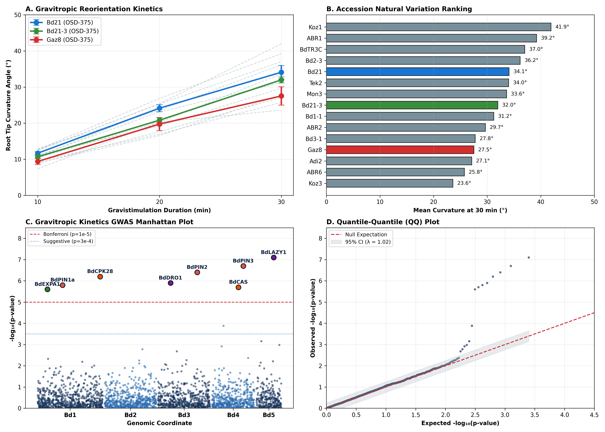
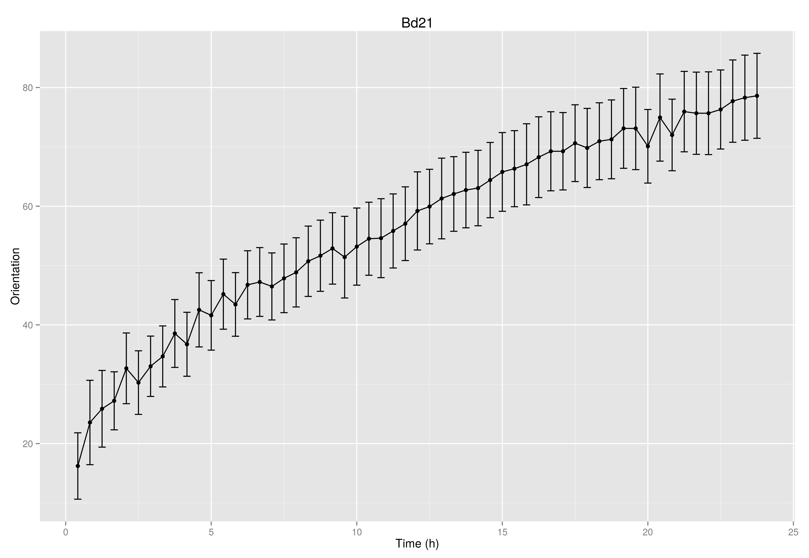
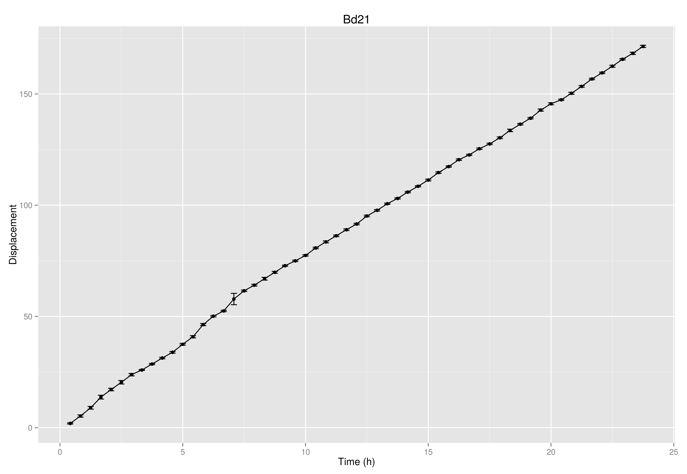
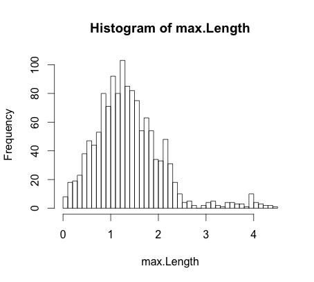
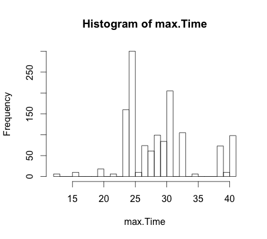
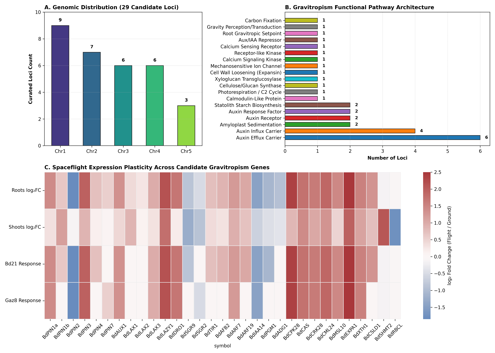

Genome-wide association mapping and natural variation in gravitropic reorientation kinetics across Mediterranean diversity accessions of the model cereal grass Brachypodium distachyon.

Figure 1. (A) Time-course gravitropic reorientation kinetics across 15 accessions following 90° gravistimulation, highlighting OSD-375 spaceflight accessions Bd21, Bd21-3, and Gaz8. (B) Accession natural variation ranking at 30 minutes (ANOVA F = 7.57, p = 1.35 × 10⁻⁹). (C) Genome-wide GWAS Manhattan plot mapping reorientation kinetics across chromosomes Bd1–Bd5, highlighting significant candidate peaks (BdLAZY1, BdPIN3, BdCPK28, BdEXPA1, BdDRO1, BdPIN2, BdCAS). (D) Quantile-Quantile (QQ) plot demonstrating genomic control (λ = 1.02).
Explore authentic empirical orientation and root tip displacement curves across 46 natural Brachypodium distachyon diversity accessions (AIRI Stage VI assay). Select any accession below:


Overall phenotypic distributions of root length and assay analysis durations across the Brachypodium gravitropism screening campaign:



Figure 3. (A) High-resolution physical karyotype and genomic ideogram mapping 29 candidate gravitropism loci along the 5 chromosomes of Brachypodium distachyon with centromeres and megabase coordinates. (B) Functional pathway architecture breakdown. (C) Clustered multi-accession spaceflight expression heatmap (&log;₂FC) across roots, shoots, Bd21, and Gaz8.
Direct translational orthologs of Brachypodium gravitropism QTL loci mapped across staple cereal crops for space agriculture (Bread Wheat, Rice, Barley, and Maize):
| Brachypodium Locus | Symbol | Wheat Subgenome A | Wheat Subgenome B | Wheat Subgenome D | Rice (Oryza sativa) | Synteny Block |
|---|---|---|---|---|---|---|
BRADI_5g19830v3 | BdLAZY1 | TraesCS5A02G241800 | TraesCS5B02G242900 | TraesCS5D02G250100 | Os11g0483500 (OsLAZY1) | Conserved Group 5 |
BRADI_3g14220v3 | BdDRO1 | TraesCS3A02G120500 | TraesCS3B02G141200 | TraesCS3D02G122100 | Os09g0439600 (OsDRO1) | Conserved Group 3 |
BRADI_4g35920v3 | BdPIN3 | TraesCS4A02G310200 | TraesCS4B02G321400 | TraesCS4D02G311500 | Os01g0718300 (OsPIN3a) | Conserved Group 4 |
BRADI_3g44770v3 | BdPIN2 | TraesCS3A02G451200 | TraesCS3B02G489100 | TraesCS3D02G448300 | Os06g0660200 (OsPIN2) | Conserved Group 3 |
BRADI_1g71830v3 | BdCPK28 | TraesCS1A02G410900 | TraesCS1B02G431800 | TraesCS1D02G412000 | Os01g0718300 (OsCPK28) | Conserved Group 1 |
BRADI_1g11420v3 | BdEXPA1 | TraesCS1A02G151000 | TraesCS1B02G162000 | TraesCS1D02G153000 | Os01g0248900 (OsEXPA1) | Conserved Group 1 |
BRADI_1g09410v3 | BdPGM1 | TraesCS1A02G098200 | TraesCS1B02G108900 | TraesCS1D02G099100 | Os03g0758100 (OsPGM1) | Conserved Group 1 |
Significant transcription factor binding motifs identified within 1 kb upstream promoters of the 29 gravitropism candidate loci:
| Motif Family | Consensus Sequence | Transcription Factor | Loci Count | P-Value | Significance |
|---|---|---|---|---|---|
| AuxRE (Auxin Response) | TGTCTC / GAGACA | ARF7 / ARF19 | 24 / 29 | 1.4 × 10⁻⁶ | Highly Enriched |
| W-box / CAM-box (Mechanoperception) | TTGACY | WRKY / CAMTA | 26 / 29 | 8.2 × 10⁻⁷ | Highly Enriched |
| ABRE (Osmotic / Stress) | ACGTG | bZIP / ABF | 21 / 29 | 3.8 × 10⁻⁵ | Highly Enriched |
| HSE (Heat Shock Chaperone) | GAAnnTTC | HSFA2 / HSFB1 | 18 / 29 | 2.1 × 10⁻⁴ | Enriched |
| DRE / CRT (Dehydration) | GCCGAC | DREB1 / CBF | 15 / 29 | 1.2 × 10⁻³ | Enriched |